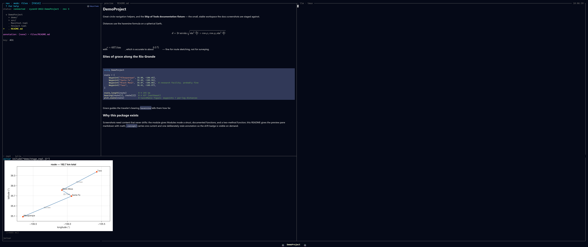

The REPL Pane
Bottom-right drawer — Ctrl+J. The REPL pane is a persistent Julia session available throughout a session: the same bindings, the same loaded packages — but its output is structured, and the figures it produces render inline in the native window rather than as terminal text. It shares the bottom drawer slot with the Terminal and Monitor.
This page covers the pane itself — what fills it, its keys, how to drive it. For the frame schema, dispatch semantics, and figure-rendering mechanics in depth, see The REPL.

The REPL pane: structured output with a CairoMakie figure rendered inline.What fills it
A Julia process supervised by the backend daemon, distinct from the kernel that does project introspection. They are separate on purpose: the kernel owns dispatch tables, mode trees, indexing, and AST hashing; the REPL owns your interactive state. Because they are different processes, killing the REPL does not kill the kernel — you can restart your interactive session to clear state or recover from a wedged computation without losing the project view.
Driving it
Two ways to drive it, without retyping:
- Run a
.jlfile from Files mode —Rincludes it into the current session;rfirst resets the REPL into the file's own project, then runs it. - Type at the prompt —
Entersubmits,Shift+Enterinserts a newline.
Per-line and per-block dispatch (the line at the cursor, or the surrounding top-level form) are planned, not yet built.
A long-running evaluation runs on its own task, so it does not block the dispatch loop and you can interrupt it mid-eval — a real InterruptException, the same as Ctrl-C in the stock REPL.
Structured output
Instead of one undifferentiated text stream, the display shim emits typed frames — stdout, stderr, value, image, error, and a terminal done — so the frontend renders each correctly: stdout/stderr stream as bytes arrive, errors carry a structured stacktrace with file:line links, and a showable value (a CairoMakie Figure, a Plots.Plot, anything with show(io, MIME"image/png")) becomes an image frame drawn inline through the preview layer — never a degraded terminal-graphics protocol.
See also
- The REPL — the frame schema, dispatch semantics, and figure rendering in depth.
- The Orchestrator — the agent dispatches code to this same REPL via a tool.